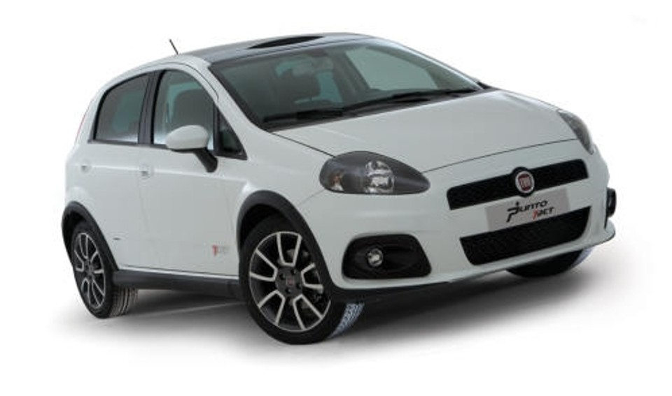

TJET RARIDADE
ATENÇÃO!!!
Chegou a oportunidade que você esperava! O Fiat Punto T-Jet 2010 está disponível em nossa loja, trazendo esportividade, desempenho e estilo em um só carro. Equipado com motor turbo 1.4 de 152 cv, câmbio manual de 5 marchas e uma dirigibilidade incrível, esse hatch oferece uma experiência emocionante ao volante. Além disso, conta com um design marcante, interior confortável e repleto de tecnologia para tornar cada viagem ainda mais prazerosa. Não perca tempo, venha conferir de perto e leve para casa o equilíbrio perfeito entre potência e sofisticação!
R$50.000,00 á vista